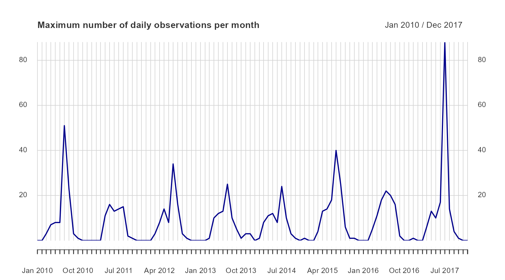

Working with xts time series
Alejandro Ruete
2020-10-08
Source:vignettes/working_with_xts_timeseries.Rmd
working_with_xts_timeseries.RmdThis vignette is adapted from https://rpubs.com/RLodge/timeseriesintro
xts Objects
One of the objects that comes out of the summariseBirds() function is $temporal, a xts object. A xts is a time series (a series of data points in chronological order, where time is the independent variable). The ‘x’ in xts stands for extensible, because it is an extension of zoo (another package). An xts object is formed just as a zoo object is. However, an xts object is in matrix form and thus is easier to subset through.
If we start from the basic example
library(BIRDS) library(xts) # Create a grid for your sample area that will be used to summarise the data: grid <- makeGrid(gotaland, gridSize = 10) # The grid can be easily created in different ways. # Import the species observation data: PBD <- bombusObs # alternatively, you could load a previously downloaded .CSV file # PBD <- read.csv(file="path/to/your/file.csv) # Convert the data from an observation-based to a visit-based format, # adding a unique identifier for each visit: OB <- organizeBirds(PBD, sppCol = "scientificName", simplifySppName = TRUE) # Summarise the data: SB <- summariseBirds(OB, grid=grid)
we see that SB contains an element called SB$temporal that contains a daily time series with time specific rows when there is information. xts also supports time, but dating below day resolution is not yet implemented in the BIRDS package.
sb.xts<-SB$temporal head(sb.xts) #> nObs nVis nSpp #> 2000-04-21 1 1 1 #> 2000-04-24 1 1 1 #> 2000-04-25 9 5 6 #> 2000-04-26 7 4 5 #> 2000-05-05 1 1 1 #> 2000-05-28 3 2 3 dim(sb.xts) #> [1] 1734 3
Sub-setting is convenient in xts as you can do it with its dates and with a / for a range of dates.
sb.xts["2017-09"] #a specific month #> nObs nVis nSpp #> 2017-09-01 1 1 1 #> 2017-09-03 2 2 2 #> 2017-09-07 1 1 1 #> 2017-09-09 1 1 1 #> 2017-09-12 1 1 1 #> 2017-09-19 4 2 4 sb.xts["2017-09-07"] #a specific day #> nObs nVis nSpp #> 2017-09-07 1 1 1 sb.xts["2017-01-01/2017-05-01"] #for a period #> nObs nVis nSpp #> 2017-03-10 1 1 1 #> 2017-03-22 1 1 1 #> 2017-03-23 2 2 2 #> 2017-03-24 2 2 2 #> 2017-03-25 5 5 3 #> 2017-03-26 6 6 4 #> 2017-03-27 1 1 1 #> 2017-03-28 2 2 2 #> 2017-03-31 3 3 2 #> 2017-04-01 5 5 4 #> 2017-04-02 8 8 3 #> 2017-04-03 6 6 4 #> 2017-04-04 1 1 1 #> 2017-04-05 1 1 1 #> 2017-04-06 2 2 2 #> 2017-04-07 3 3 2 #> 2017-04-08 3 3 2 #> 2017-04-09 9 9 5 #> 2017-04-11 6 6 4 #> 2017-04-12 1 1 1 #> 2017-04-14 5 5 4 #> 2017-04-16 2 2 1 #> 2017-04-19 2 2 2 #> 2017-04-21 1 1 1 #> 2017-04-22 3 3 3 #> 2017-04-23 3 3 2 #> 2017-04-26 3 3 3 #> 2017-04-29 5 5 4 #> 2017-04-30 12 11 6 #> 2017-05-01 4 3 2
xts has several tools for converting to different periods. Here we will use to.monthly. This provides, the first, min, max, and last of the data. We can plot the daily maximum number of observations. The plot command with an xts object provides a TON of features. This makes it fairly easy to customize your plots. Read more in ?plot.xts.
obs.m <- to.monthly(sb.xts$nObs) obs.m["2017-04"] #> sb.xts$nObs.Open sb.xts$nObs.High sb.xts$nObs.Low sb.xts$nObs.Close #> Apr 2017 5 12 1 12 sb.xts["2017-04"] #> nObs nVis nSpp #> 2017-04-01 5 5 4 #> 2017-04-02 8 8 3 #> 2017-04-03 6 6 4 #> 2017-04-04 1 1 1 #> 2017-04-05 1 1 1 #> 2017-04-06 2 2 2 #> 2017-04-07 3 3 2 #> 2017-04-08 3 3 2 #> 2017-04-09 9 9 5 #> 2017-04-11 6 6 4 #> 2017-04-12 1 1 1 #> 2017-04-14 5 5 4 #> 2017-04-16 2 2 1 #> 2017-04-19 2 2 2 #> 2017-04-21 1 1 1 #> 2017-04-22 3 3 3 #> 2017-04-23 3 3 2 #> 2017-04-26 3 3 3 #> 2017-04-29 5 5 4 #> 2017-04-30 12 11 6 plot(obs.m["2010/2017",2], col = "darkblue", grid.ticks.on = "month", major.ticks = "month", grid.col = "lightgrey", main = "Maximum number of daily observations per month")

Only months with data are plotted in this figure. What if we want to complete the time series and plot all zeros too? in the original time series there is not data for every day, therefore the time series is incomplete.
# sb.xts.na is same as sb.xts but with all missing days added (with NAs) rng <- range(time(sb.xts)) sb.xts.na <- merge(sb.xts, xts(, seq(rng[1], rng[2], by = "day")))
However, in our monthly example we may not need data for every day, but month, and this time we need 0s instead of NAs. Even more, we don’t want to add zeros for the months we already have data, because that will change the summary statistics. Then we add 0s for the months we have no data.
z.seq <- seq(rng[1], rng[2], by = "month") YM.sb.xts<-unique(as.Date(as.yearmon(index(sb.xts)))) YM.z.seq<-as.Date(as.yearmon(z.seq)) wTrm <- which(YM.z.seq %in% YM.sb.xts) z.seq <- z.seq[-wTrm] ## remove the days for which z <- xts(, z.seq) sb.xts.0 <- merge(sb.xts, z, fill = 0) obs.m.0 <- to.monthly(sb.xts.0$nObs) plot(obs.m.0["2010/2017",2], col = "darkblue", grid.ticks.on = "month", major.ticks = "month", grid.col = "lightgrey", main = "Maximum number of daily observations per month")
